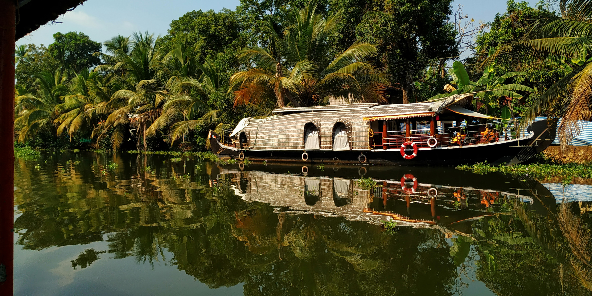

KERALA
KERALA
GOD'S OWN PLACE
One of the top tourist destinations in India, Kerala is a tropical paradise. Surrounded by friendly, loving, cultured and historical environment, there are many travel destinations in Kerala that is always on top of the tourist choice to visit. This is certainly why Kerala has become synonymous with what we call ‘Paradise.’ Being one of the cleanest states in India it attracts many travellers from across the world.Named as one of the ten paradises of the world by National Geographic Traveler, Kerala is famous especially for its ecotourism initiatives and beautiful backwaters.Its unique culture and traditions, coupled with its varied demography, have made Kerala one of the most popular tourist destinations in the world. Growing at a rate of 13.31%, the tourism industry is a major contributor to the state's economy.
CENTER OF ATTRACTIONS
-

MUNNAR
Munnar is a hill station located in the Idukki district of Kerala. Situated at an altitude of 5,200 feet, this town attracts hordes of tourists every year. This traditional beautiful town is popular for its tea estates. The name Munnar is derived from the words Moonu (three) and Aaru (river), referring to the towns location at the confluence of Madhurapuzha, Nallathanni and Kundaly rivers. Munnar is popular among nature lovers, wildlife enthusiasts, honeymooners, adventure enthusiasts and almost every kind of traveler. We give you 5 reasons why you too must visit Munnar.
-

KUMBALANGI
Kumbalangi Integrated Tourism Village Project is a unique initiative to transform the tiny island of Kumbalangi into a model fishing village and tourism spot. It is the first of its kind in India and is located in Kochi. It is blessed with many natural wonders and the people who visits are treated to many a rare treat.Kumbalangi is surrounded by backwaters. Chinese Fishing Nets cover the island and the village boasts of rich aquatic life.
-

KUMARAKOM
Kumarakom,situated 13 Kms away from Kottayam is a sleepy little village on VembanadLake in Kerala. It offers wide variety of flora, exotic sightseeing, boating and fishing experience. The bird sanctuary spread across 14 acres is safe home for many migratory birds like Siberian stork, wild duck etc. They live with other birds in flocks such as darters, herons, egret, waterfowls and cuckoos are fascinating sight for the visitors. hacklink hizmeti paykwik.
-

THIRUVANATHAPURAM
The capital city of Kerala, Thiruvananthapuram or Trivandrum, is an appealing blend of a strongly rooted heritage and a nostalgic colonial legacy. Built upon seven hills, this city has long since left the days when it was only used by seafaring explorers behind - today, Trivandrum is an expensive metropolis with quaint urban charm and plenty of architectural and historical places to visit. In addition, Trivandrum is a gateway to nearby popular beach towns of Kovalam and Varkala.The Padmanabhaswamy temple (also known as Anantha Padmanabhaswamy temple) is a must-visit temple of India. Other famous temples in Trivandrum include the Attukal Bhagawati temple, the Aazhimala Siva Temple, the Karikkakom Chamundi Devi Temple, and the Pazhavangadi Ganapathy Temple. The city is home to a few museums, such as the Kuthiramalika Palace Museum and the Napier Museum.